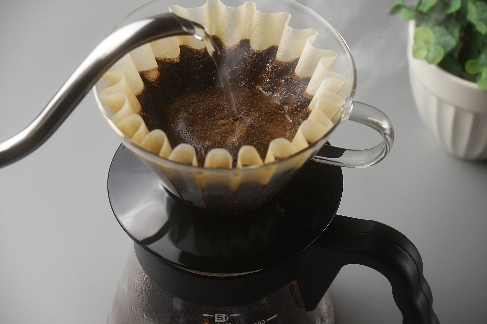
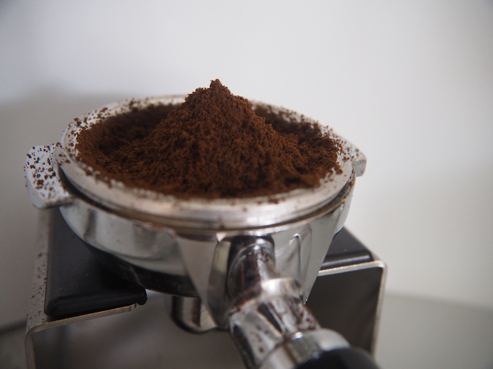
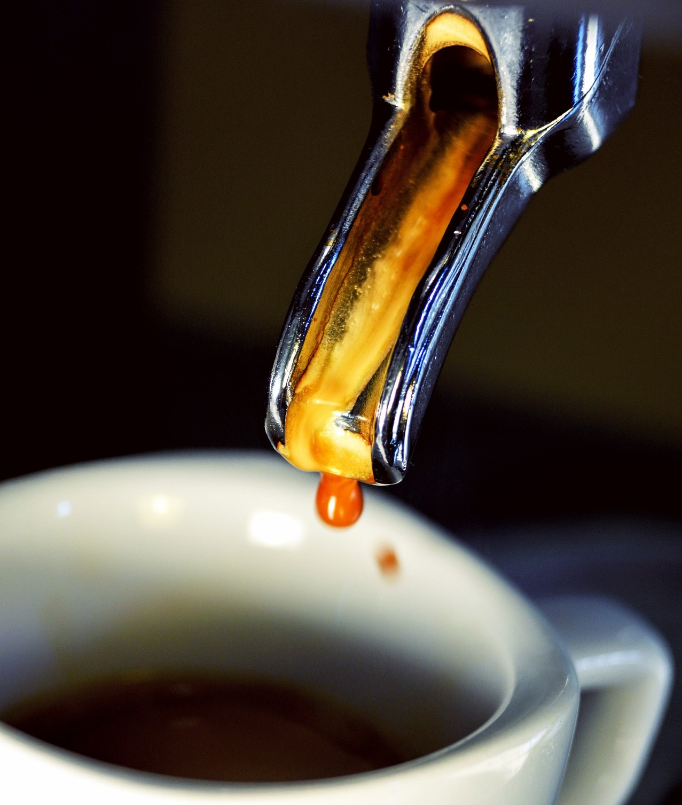

Guter Kaffee braucht beim Brühen die richtige Temperatur,
nämlich 92 – 95°C. Bei einem kalten Filterhalter gehen ruckzuck einige Grad
verloren. Gerade Modelle aus Keramik sollten daher vorher unbedingt mit heißem
Wasser gespült werden.
Filtertüte auswaschen
Filtertüten sind in der Regel aus Papier und schmecken in
der Regel leider auch so. Bevor sie mit gemahlenem Kaffee in Kontakt kommt,
sollten diese also mit Wasser ausgespült werden. Dazu legt man die Filtertüte
einfach in den warmen Filterhalter und schwenkt diesen dann mit heißem Wasser
1-2 mal durch. So werden kleinste, lose Papierfasern und der Eigengeschmack
minimiert.
Kaffee erst kurz vorher mahlen
Dieser Tipp gilt eigentlich für alle Zubereitungsmethoden,
denn Kaffeepulver verliert schnell an Aroma und damit an Geschmack. Der Mahlgrad
sollte auf mittel bis fein eingestellt sein. Falls der Kaffee zu schwach wird,
sollte man die Mühle noch feiner, falls der Filter verstopft, etwas gröber
einstellen.
Eine Waage hilft
Wasser- und Kaffeemenge sollten aufeinander abgestimmt
sein. Das geht am besten mit einer Küchenwaage. Pro Liter empfiehlt sich eine
Kaffeemenge von etwa 55-60 Gramm, je nach Geschmack und Kaffee. Hier hilft am
besten Experimentieren, nur so lässt sich die optimale Menge für den
persönlichen Geschmack finden.

Heißes Wasser
Das Wasser muss heiß sein, sollte aber nicht sprudelnd
kochen. Als optimal gilt eine Temperatur zwischen 92° und 95°. Mit einem
Thermometer findet man schnell und exakt diese Temperatur. Alternativ: den
Wasserkocher nach dem Abschalten einfach einen Moment stehen lassen. Sobald die
Bewegung im Wasser nachgelassen hat, liegt die Temperatur automatisch im grünen
Bereich.
Ruhig aufgießen
Zu Beginn sollte man eine kleine Menge Wasser auf das
Kaffeepulver geben, etwa 30-50 ml. Gerade so viel, dass das Pulver komplett
befeuchtet ist und sich etwas aufbläht. Nach etwa rund 15-30 Sekunden mehr
Wasser nachgießen.
Kreise ziehen
Beim Aufgießen sollte man dann möglichst langsam vorgehen,
in der Mitte des Filters beginnen und in kreisenden Bewegungen langsam nach
außen bewegen. Dabei sollte man darauf achten, dass man den Rand nicht übergießt
und auch das Wasser nicht zu hoch steigt. Falls zu viel Wasser im Filter stehen
bleibt, einfach kurz absetzen und nach einer Pause weitermachen. Bis die
komplette Kanne durchgelaufen ist, sollte das gute 2 Minuten dauern.
Vollautomat
Wie findest Du den richtigen Mahlgrad?
Beim Espresso zubereiten lässt sich am Geschmack am Besten
feststellen, ob der Mahlgrad zu grob oder zu fein ist. Bei einer zu groben
Einstellung kann der Espresso einen sauren Eindruck gewinnen, bei einer zu
feinen Justierung kann er einen bitteren Geschmack bekommen. Auch die
Durchlaufzeit des Espressos gibt Aufschluss darüber, ob die Einstellung richtig
gewählt ist. Läuft der Espresso innerhalb zwei Sekunden durch, ist der Mahlgrad
auf jeden Fall zu grob. Die Oberflächenbeschaffenheit des Kaffeepulvers lässt
keinen ausreichenden Kontakt mit dem Wasser zu. Anstrebenswert ist eine
Extraktionszeit beim Kaffeevollautomaten von zehn Sekunden. Welche die beste
Einstellung für Deinen Kaffeevollauomaten ist, lässt sich pauschal schwer
beantworten. Um die beste Einstellung für Deinen Automaten zu finden musst du
die Durchlaufzeit beobachten. Am Ende entscheidet wesentlich der Geschmack über
Deine individuelle Einstellung.
Finde Deine persönliche Kaffeestärke
Wichtig für die Auswahl eines Kaffeevollautomaten ist, das
sich die Kaffeestärke in mehrere Stufen unterteilen lässt. Eine Unterteilung in
fünf Stufen ist sinnvoll. Leider kann man häufig jedoch nur zwischen zwei
Einstellungen wählen. Nicht nur die gewählte Kaffeemenge bzw. Kaffeestärke
entscheidet jedoch darüber, ob der Kaffee sehr kräftig oder sehr mild schmeckt,
sondern im Wesentlichen auch die gewählte Kaffeebohne. Aber dazu später. Eine zu
geringe Kaffeemenge kann einen noch so guten Kaffee wässrig schmecken lassen,
Aromen können sich nicht ausreichend entfalten. Von daher empfehlen wir eine
Einstellung von mittel bis stark.
Wähle die optimale Wassermenge
Die Wassermenge lässt sich bei vielen Kaffeevollautomaten
für die verschiedenen Kaffeegetränke individuell einstellen. Die optimale
Wassermenge entscheidet über den guten Geschmack ebenso wie die Kaffeemenge bzw.
gewählte Stärke. Bei den meisten Vollautomaten ist bereits eine empfohlene
Grundeinstellung eingestellt.
Stelle die richtige Wassertemperatur ein
Wenn Du kannst! Einige Kaffeevollautomaten bieten die
Möglichkeit, das Kaffeewasser auf eine bestimmte Temperatur einzustellen, andere
wieder nicht. Wie bei den anderen Kaffeezubereitungsverfahren sollte das Wasser
eine maximale Temperatur von 95°C haben. Bei noch heißerer Temperatur kann der
Kaffee sonst schnell zum bitteren Geschmackserlebnis werden. Bei 95°C können
sich die Aromen im Kaffee optimal entfalten. Bei zu niedriger Temperatur kann
der Kaffee zu saurem Geschmack neigen.
Lass deinen Automaten wissen, welchen Härtegrad Dein Wasser hat
Tatsächlich, das gibt’s. Manchem Kaffeevollautomaten kann
man tatsächlich mitteilen, welchen Härtegrad das heimische Wasser aufweist.
Woher sollst Du das wissen? Infos zu Deinem Wasser findest Du einfach und
problemlos im Internet. Meist findet sich so auch noch vieles andere
Wissenswertes über Dein Wasser vor Ort wie pH-Wert und z.B. Kalziumgehalt.
Manche Kaffeeautomaten, die diese Einstellungsmöglichkeit bieten, haben im
Lieferumfang einen Teststreifen zum Messen der Wasserhärte beigelegt. Ist die
Wasserhärte zu hoch, kann der Kaffee nicht sein volles Aroma ausbauen, ist der
pH-Wert zu niedrig, kann auch der Kaffee sauer schmecken. Kaffeewasser ist
essentiell wichtig für die Qualität Deines Kaffees.
Du hast hartes Wasser? Nutze einen integrierten Wasserfilter
Wenn Du weißt, welche Härte Dein Wasser in Deiner Stadt
hat, kannst du das bei manchen Vollautomaten einstellen. Dir wird aufgrund
dessen dann angezeigt, wann Du Deine Maschine entkalken solltest. Das macht aber
dein Wasser aber noch nicht weicher. Einige Kaffeeautomaten bieten die
Möglichkeit, einen Wasserfilter beispielsweise direkt in den Wassertank
einzubauen, um das Wasser zu enthärten. Du musst Deinen Automat dann
dementsprechend seltener entkalken. Nichts ist für den Kaffeevollautomaten
schädlicher als Kalk. Ein integrierter Wasserfilter schont das System und das
Aroma des Kaffees kann sich wesentlich besser entfalten. Die Filter müssen nach
einer gewissen Durchlaufmenge ersetzt werden. Wenn ein integrierter Wasserfilter
für Dein Kaffeewasser interessant sein sollte, frag nach den Preisen für die
Ersatzkartuschen. Vorausgesetzt dem natürlich, das Dein Automat dieses Feature
bietet. Ein preislicher Vergleich mit einem externen Wasserfilter kann
interessant sein und hat den gleichen Effekt.
Tägliche Reinigung und Pflege des Kaffeevollautomaten
Hört sich erst einmal aufwendig an, so anspruchsvoll ist
es aber gar nicht. Die Generation Kaffeevollautomaten von heute haben in der
Regel alle ein Reinigungsprogramm, das das tägliche Säubern und Pflegen auf ein
Minimum an Aufwand reduziert. Jeden Tag gereinigt sollten auf jeden Fall das
Kaffeesatzbehältnis sowie der Wassertank. Innovative Vollautomaten zeigen Dir
von Haus aus an, wann Ihr Kaffesatzbehälter voll ist. Wenn Sie den Wassertank
mit frischem Wasser befüllen müssen, schwenken Sie Ihn einfach noch einmal kurz
aus, anstatt ihn nur aufzufüllen. So garantierst Du, das immer frisches Wasser
im Tank ist. Insbesondere die Teile, die mit Milch in Berührung kommen, sollten
nach jeder Zubereitung eines milchhaltigen Getränks unmittelbar durchgespült
werden. So sparst Du Zeit und trägst einen großen Beitrag zur Hygiene in Deinem
Automaten bei, denn einmal festgesetzte Milchreste lassen sich nur beschwerlich
wieder aus dem System entfernen. Außer dem Spülen gehören Aufschäumer und das
System dann und wann auch gereinigt.
Alles entscheidend - Die Kaffeebohne für den Vollautomaten
Welche Kaffeebohne ist nun die Beste für den
Kaffeevollautomaten? Diese Frage lässt sich nicht pauschal beantworten:
Grundsätzlich eignet sich jede Kaffeebohne für den Vollautomaten. Wichtig ist
natürlich, das die Bohne schonend geröstet wurde. Davon hängt die Qualität und
der Geschmack entscheidend ab. Eine zu dunkle Röstung kann den Kaffee bitter
schmecken lassen, zu helle Röstungen erscheinen manchmal leicht sauer. Doch wie
findest Du die für Dich Beste Kaffeebohne? Nicht nur von der Röstung, sondern
hauptsächlich vom eigenen Geschmack und den von Dir favorisierten
Kaffeespezialitäten sollte die Wahl der Kaffeebohne ausgehen.
Siebträgermaschine
Siebträger reinigen
Es sind die Kleinigkeiten, die den perfekten Espresso
ausmachen: Damit dein neuer, frischer Espresso nicht von Rückständen vorheriger
Zubereitungen beeinflusst wird, empfehlen wir den Siebträger zu reinigen. Klopfe
ihn hierfür aus und reibe ihn mit einem Tuch aus, sodass keine Pulver- oder
Kaffeeölrückstände mehr vorhanden sind.
Der perfekte Mahlgrad
Die Definition des perfekten Mahlgrads ist eine
Philosophiefrage und auch Geschmackssache. Für den Einstieg und ersten Testlauf
mit einer neuen Sorte raten wir dir zum feinsten Mahlgrad. Sofern du den
Espresso von Barista Royal gemahlen bestellst, wird dieser erst nach deinem
Bestelleingang gemahlen. Solltest du die ganzen Bohnen bestellen, raten wir dir
dazu die Bohnen erst unmittelbar vor der Zubereitung zu mahlen. Warum? Das Aroma
behält seinen besten Geschmack in der ganzen Bohne, sodass man das Mahlen
möglichst lange hinauszögern sollte. Ob elektrische Mühle oder Handmühle ist
ebenfalls Geschmacksache. Nostalgikern raten wir zu Omas Handmühle. Wer es
moderner, gleichmäßiger und genauer mag, zu elektrischen Modellen.
Tasse vorwärmen
Standhaftere Crema, besserer Geschmack und längere
Warmhaltedauer. Diese 3 wesentlichen Effekte kannst du erzielen, wenn du die
Tasse(n) vorwärmst, z.B. durch Abstellen auf der Wärmeplatte deiner
Siebträgermaschine oder durch das Vorwärmen mit warmem Wasser. Achte bitte
darauf, dass du keine Wasserrückstände in der Tasse hast, da diese den Espresso
sonst verdünnen.

Kaffeepulver in den Siebträger
Fülle den Siebträger so, dass er leicht gehäuft ist (ca.
16 – 18 Gramm) und streiche das Pulver z.B. mit dem Finger glatt.
Tampen
Unter dem Begriff „Tampen“ bezeichnet man das Festdrücken
des Espressopulvers im Siebträger. Verwendet wird hierfür in der Regel ein
Stempel aus Metall. Keine Sorge, du musst zum Festdrücken kein Bodybuilder sein,
sondern nur mit ein bisschen Krafteinwirkung dafür sorgen, dass das Pulver
zusammengedrückt wird. Wichtig ist, dass der Druck möglichst gleichmäßig
ausgeübt wird, sodass eine einheitliche Oberfläche entsteht.
Brühkopf reinigen
Wie zuvor erwähnt wollen wir nicht, dass dein perfekter
Espresso durch alte Kaffeerückstände beeinflusst wird. Lass daher 3-5 Sekunden
heißes Wasser aus dem Brühkopf fließen, bevor dur den Siebträger einsetzt.

Siebträger einsetzen und den perfekten Espresso kreieren
Nun kannst du den Siebträger einsetzen, die vorgewärmten
Tassen unterstellen und den Espresso durchlaufen lassen. Weder zu lange noch zu
kurze Durchlaufzeiten sind ideal. Wir empfehlen 30 Sekunden (+/- 5 Sekunden) für
den perfekten Espresso. Wenn der Espresso zu schnell oder zu langsam durchläuft,
dann passe den Mahlgrad entsprechend an.
.jpg)
.jpg)
.jpg)
.jpg)
.jpg)
.jpg)